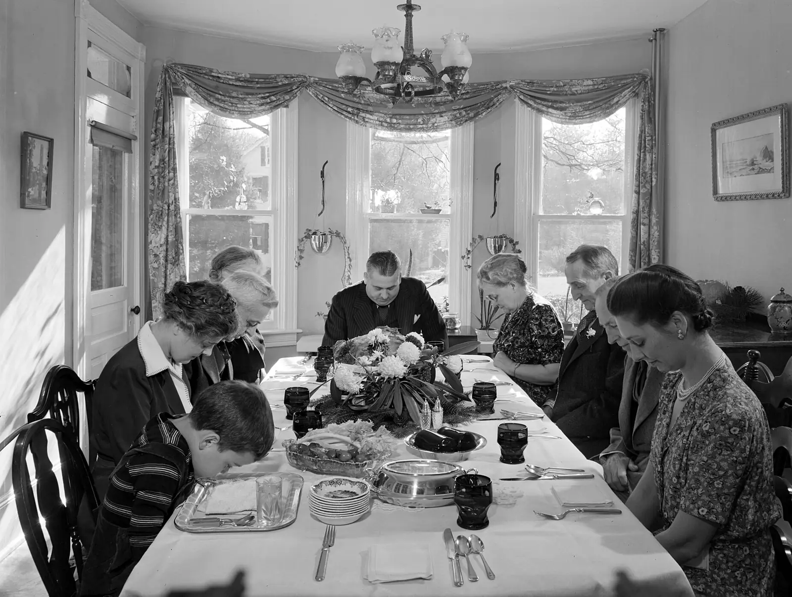
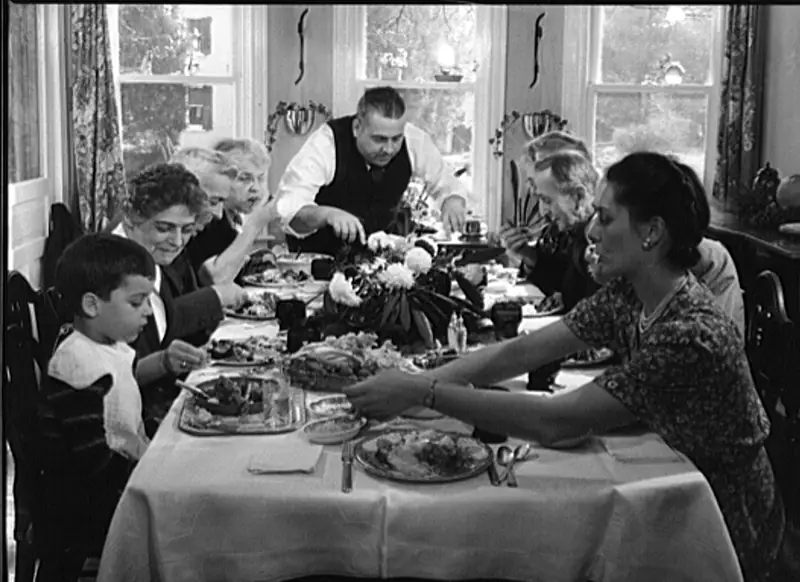
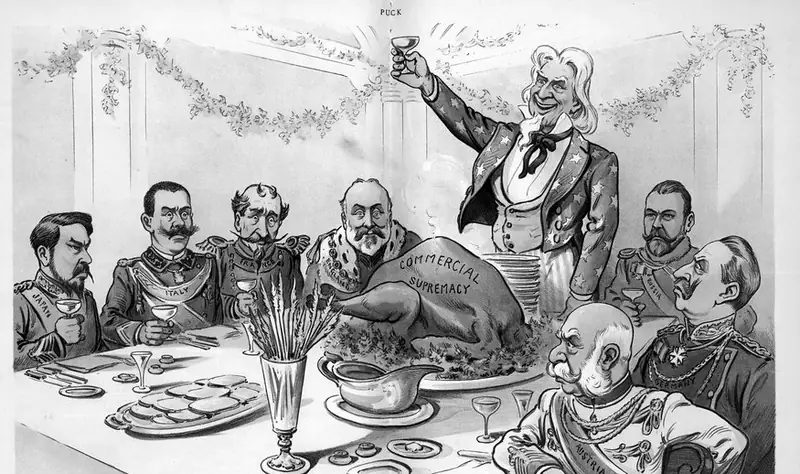
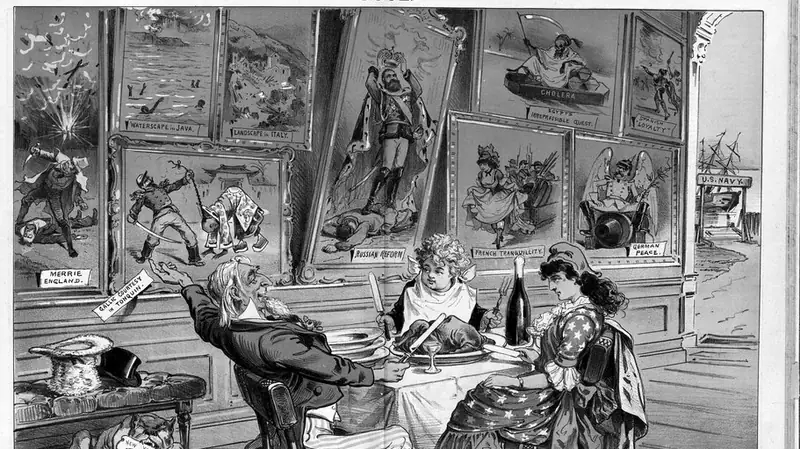
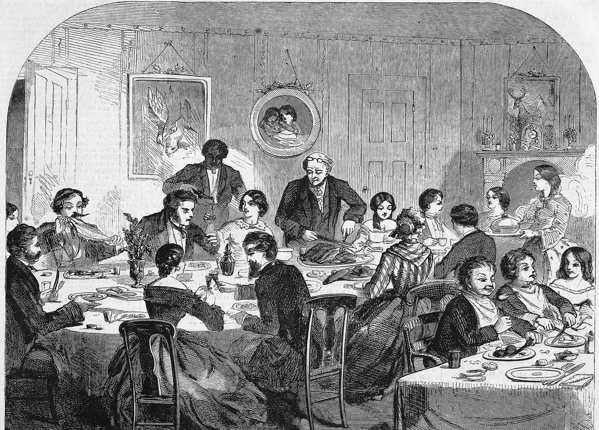

Family dinnermoves opinions
In the week of Thanksgiving, Americans and Canadians shift their political views towards the side their family is on. We re-ran the study to check.
Seat your familyThe short version

The question. Politics in North America is splitting into camps, and most people mostly talk to people who think like them. Does a meal with relatives who vote differently pull you towards them, or push you further away? The study. Economist Kirsten Cornelson surveyed 2,006 Americans and Canadians every week around Thanksgiving in 2019, 2021 and 2022. The answer. In the Thanksgiving week, opinions move towards the family: for every step the family stands further right on a 0–6 scale, people's views move about 0.05 points right. Nobody became more extreme overall. Our check. We rebuilt the analysis from the raw data and got the same picture.
Two holidays, one test
Canada celebrates on the second Monday of October, the US on the fourth Thursday of November. So in any given week, one country has just had dinner with the family and the other has not. That gap is the experiment.
Ask
2,006 people answered a short survey every week for six weeks: 10,092 answers in all.
Narrow
606 of those answers were given in the week right after their own country's Thanksgiving.
Compare
Each person is compared with their own other weeks, and with the other country in the same week.
More politics at the table
In the Thanksgiving week, people are about 5 percentage points more likely to talk politics with parents, siblings or grown-up children than the week before.
Picture: a cartoon from 1901, cut into tiles. Uncle Sam raises a toast at a dinner table where European monarchs sit around a turkey labelled “commercial supremacy”.
Always on the menu
Canada: second Monday of October
US: fourth Thursday of November
No survey in 2020: Covid kept families apart

“Our international Thanksgiving dinner”, J. S. Pughe, Puck, 1901. Library of Congress, public domain.
Seat your family
Place yourself and your family on the survey's own scale, from 0 (extremely left wing) to 6 (extremely right wing). We compute how far your opinions would move in the Thanksgiving week, from our replication of the study.
How sure are we?
We changed one thing at a time and re-estimated the family effect. Pick the checks to compare, and the unit to read them in.
| Check | Effect | 95% range | Reliable? | Answers |
|---|
“Reliable?” uses a wild cluster bootstrap: yes means p < 0.05, borderline p < 0.10. “Share of spread” divides the effect by the standard deviation of opinions.
Test yourself
Three exam-style questions, from easy to hard. Nothing you type leaves this page.

Why does the study need Canadians?
Easy: about the comparison group.
You at 3, family at 6: how far do you move?
Medium: reading interaction terms.
What could still bias the family effect?
Hard: omitted variable bias.
About this replication
We are students in Empirical Methods at the University of Zurich. We rebuilt the paper's analysis in R from the author's raw survey data, then tested how far the result bends.

- Paper
- Cornelson, Economic Journal, 2026
- Data
- 10,092 answers, 2,006 people
- Years
- 2019, 2021, 2022
- Method
- Panel regression with fixed effects